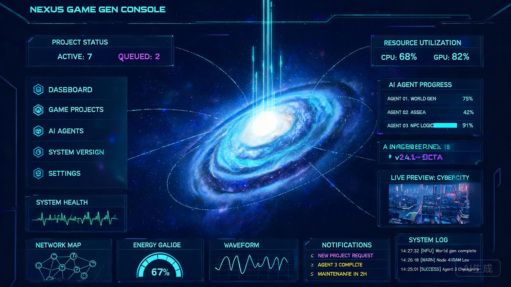
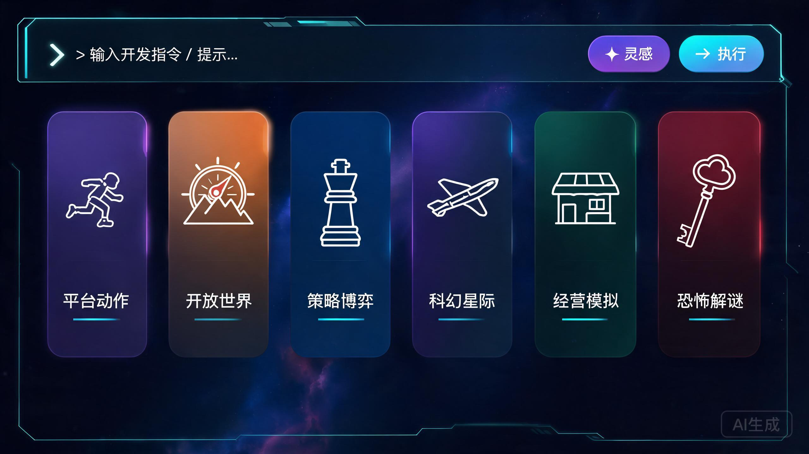

控制台美化方案
从「特效堆叠」到「精密仪表」
现有界面已建立了辨识度很高的全息科幻世界观——WebGL 星系着色器是真正的差异化资产。本方案不动世界观，只做一件事：把装饰预算收回来，还给可读性与视觉焦点，让这套界面从"炫技演示"进化为"可以每天用八小时的生产工具"。
00方案摘要
一段话说清这次美化在做什么、不做什么。
做的三件事：
① 重建字号与对比度体系——当前 7.5~10px 的正文是全球可读性硬伤，全部按新 token 提升一档，辅助文字对比度从 ≈3.6:1 修到 ≥4.5:1。
② 建立"光效预算"——发光只保留给三种东西：状态指示（LIVE 灯、活动阶段）、交互反馈（hover/focus）、以及星系本体。静态内容一律去光，让星系重新成为唯一主角。
③ 放大核心任务路径——命令栏与实时预览是这套工具的命脉：输入区强化为不可忽视的主操作，预览区扩大近一倍并补全 LIVE/SIM/IDLE 状态语义。
不做的三件事：
不改配色世界观（青×紫全息是资产，保留）；不动信息架构与后端联动逻辑（SSE / 预览轮询 / 空闲停机全部原样）；不重写布局骨架（CSS Grid 结构保留，只调尺寸）。
01现状诊断
先量化问题，再决定动哪里。评分为尼尔森十大启发式 0–4 分制。
启发式评分卡
| # | 启发式 | 分 | 关键发现 |
|---|---|---|---|
| 1 | 系统状态可见性 | 3 | SSE 阶段流、LIVE/SIM/IDLE 标签、FPS 计数都是真数据，做得好；但 7.5~9px 的小字让状态"看得见、读不清" |
| 2 | 贴近真实世界 | 2 | 「系统等级 Lv.7」「能量值 1287/3000」是装饰性游戏化数字，与真实系统状态脱钩，有误导性 |
| 3 | 用户掌控与自由 | 2 | 9 个导航项点击只弹 toast，无对应页面；生成中无法查看/撤销已提交的需求 |
| 4 | 一致性与标准 | 2 | 三套图标语言并存：hex 文字符号（◈⊞⌨）、SVG 线性图标（fcards）、emoji（🎲）；两套滚动条样式代码 |
| 5 | 错误预防 | 2.5 | 有 isGenerating 防重复提交；但空输入无校验提示，30s 连接超时对用户不可见 |
| 6 | 识别而非回忆 | 2 | 模板点击只是静默填入输入框，无选中态、无"接下来会发生什么"的预期管理 |
| 7 | 灵活与效率 | 2.5 | 快速模板是好设计；但无 Ctrl+Enter 提交、无历史指令记录 |
| 8 | 美学与极简 | 1.5 | 特效密度过高：每块面板都有 scanline + beam + 辉光，40+ 元素同时发光，信息与装饰互相残杀 |
| 9 | 错误恢复 | 2.5 | 预览有 SIM 降级、日志有错误分级；但 toast 只报结果不给下一步动作 |
| 10 | 帮助与文档 | 1 | 零帮助入口，首次使用者只能靠猜 |
| Σ | 合计 | 21 / 40 | 「需重点改进」档——功能骨架健康，表层体验拖后腿 |
按严重度排序的问题清单
02设计方向
「一收一放」：放大星系与命令栏，收起其余一切装饰。
现有界面的世界观不需要推翻——全息、深空、青紫双辉光是这套产品的性格。问题在于所有元素都在用同样的音量喊话。新方向借鉴航空航天控制室的逻辑：仪表台本身是安静的、克制的、可读的，唯一的"奇观"留给中央那台仪器——星系全息投影。
具体执行为三个动作：
① 放（Hero 强化）——星系保持现有 WebGL 渲染不动，四角卡片后退（更透明、更小、去呼吸动画），让星系核心的视觉统治力恢复；命令栏升格为最醒目的操作件，预览区扩容。
② 收（仪表降噪）——所有侧栏/底栏面板去掉 scanline、beam、多层辉光，只留细边框 + 微弱内高光，像真实仪器面板的哑光质感；发光成为"信号"而非"装修"。
③ 统（语言归一）——图标全面 SVG 线性化（统一 stroke 1.5px），文字层次用字号/字重区分而非发光强度，等宽字体只用于数字与日志。


03设计系统升级
四组 token 直接进 :root，后续所有模块改造都引用这里。
3.1 字号阶梯（Type Scale）
3.2 色彩令牌（含对比度修正）
核心变化只有一个：--muted:#7e93b8 → --text-3:#8fa5c9，一次性修复全部辅助文字的对比度。语义色与背景色体系维持不变。
3.3 光效三级预算（Glow Budget）
仅限状态语义：LIVE 指示灯、当前活动阶段进度条、ECG 波形、星系本体。预算 8~12 处。
仅出现在交互瞬间：hover 边框增亮、按钮按下、focus 描边、构建成功的一次性庆祝脉冲。离场即灭。
一切静态内容：面板容器、正文文字、静态图标、分隔线。无 box-shadow 辉光、无 text-shadow。
3.4 间距与形状令牌
/* 新增 spacing/radius 令牌 */ :root{ --sp-1:4px; --sp-2:8px; --sp-3:12px; --sp-4:16px; --r-panel:10px; /* 面板统一圆角（原 12px 略收紧） */ --r-ctrl:8px; /* 控件圆角 */ --gap:14px; /* 栅格间隙 12→14px，缓解密度 */ --edge:rgba(96,180,255,.22); /* 边框微调亮，补偿去辉光后的层次 */ }
补偿策略：面板去掉辉光后容易"变平"，用更清晰的边框（--edge 提亮）+ 顶部 1px 内高光 + 更深的投影维持立体感——这是真实航空仪表的做法：哑光机身 + 精密刻线。
04分模块改造
七个区域，每个给出「问题 → 改造 → 关键代码」。全部为 CSS 层改动，JS 仅小补丁。
4.1 Header · 合一去噪
- 双标题：左上 GameForge + 中央 Gameforge-数字生命系统
- 「系统等级 Lv.7」「能量值 1287/3000」静态假数据
- scanline + beam + 标题三重 text-shadow 辉光
- 单标题居左（GameForge · 数字生命系统），右侧放真实状态
- 能量值接 preview/stats 真数据（已有轮询，只需展示）；Lv 改为"累计构建 N 次"真实计数或删除
- beam 扫光全站只保留 header 这一处，标题 text-shadow 减为一层
/* header：合一 + 只留一处 beam */ .h-left{gap:12px} .h-center{display:none} /* 冗余标题移除，靠左标题承担 */ .h-left .gf-sub{font-size:11px} /* 9px→11px */ .h-right{font-size:12px;gap:16px} /* 10px→12px */ .hud .beam{animation-duration:9s} /* 稍慢，减少注意力劫持 */ /* 其余面板的 .beam 全部移除，只保留本处 */
4.2 左侧导航 · 图标统一 + 分组降负
9 个平铺菜单项超出认知负荷舒适区（4±1）。按工作流分组为三段：设计（世界概览/任务规划/角色设定）→ 生成（代码生成/场景构建/资产库）→ 交付（测试审查/部署发布/系统日志），组间用 8px 间隔 + 组标签（10px mono）分隔，扫描效率立即提升。
- hex 容器装文字符号 ◈ ⊞ ⌨ ⛬（与 fcard 的 SVG 图标两种语言）
- 项高 33px，标题 12px / 副标 8px
- 9 项无分组平铺
- 统一 SVG 线性图标（stroke 1.5px，继承 fcard 语言）
- 项高 40px，标题 13px / 副标 11px
- 三组分组 + 组标签；active 态只保留左侧 3px 光条 + 边框，去掉 box-shadow 辉光
/* nav：加高、去辉光、分组 */ .nav-item{min-height:40px;border-radius:9px} .nav-item .tx b{font-size:13px} .nav-item .tx small{font-size:11px} .nav-item.active{box-shadow:none;border-color:var(--edgeHi)} .nav-group{font:600 10px var(--mono);color:var(--t3);letter-spacing:2px; padding:10px 8px 4px} /* 系统状态区 */ .mbar{font-size:11px} .mbar .tr{height:4px} /* 8.5px→11px, 3px→4px */ .sysstat .ok{font-size:11px}
4.3 中央舞台 · 星系主角化 + 四角卡片后退
星系渲染保持现状（它是全站最好的资产）。四角卡片当前与星系光柱争夺空间，改为"卫星仪表"姿态：宽度 180→164px、背景透明度提高、去掉 glowPulse 呼吸动画与 3D 漂浮改为静态微倾，字号全面上调。数据填充逻辑（renderCornerCards）不动。
/* fcard：后退为卫星仪表 */ .fcard{width:164px; background:linear-gradient(160deg,rgba(30,26,72,.62),rgba(10,16,38,.5)); box-shadow:0 12px 32px rgba(0,0,0,.45); /* 去紫色辉光，只留投影 */ animation:none;transform:rotateY(24deg)} /* 静态微倾 */ .fcard:hover{border-color:rgba(175,145,255,.7); /* L1 反馈光，离场即灭 */ box-shadow:0 14px 36px rgba(0,0,0,.5),0 0 18px rgba(150,110,255,.3)} .fcard .tags{font-size:11px;line-height:1.7} /* 9px→11px */ .fcard .hd b{font-size:14px} /* 13px→14px */ /* 删除 @keyframes glowPulse 及 fc1~fc4 的 animation-name 绑定 */
欢迎语标题去三重 text-shadow，只保留一层窄半径，字号 17→16px 但字重 700——用字重而非光晕做强调。
4.4 命令栏 · 唯一主操作
这是整个产品的心脏，当前却和普通面板长得差不多。改造后它应该是扫一眼就知道往哪输入、往哪点的层级：
/* cmdbar：升格为一级操作件 */ .cmdbar{padding:10px 12px;border-radius:11px; border-color:rgba(150,120,255,.55); /* 独占紫色边框语言 */ box-shadow:0 10px 28px rgba(0,0,0,.5),inset 0 0 24px rgba(96,180,255,.05)} .cmdbar input{font-size:14px} /* 13px→14px */ .cmdbar input::placeholder{color:var(--t3)} .cmdbar button{padding:9px 22px;font-size:13.5px} /* 12.5px→13.5px */ .cmdbar .kbd{font:11px var(--mono);color:var(--t3);border:1px solid var(--line); border-radius:5px;padding:1px 7px;margin-right:8px} /* 灵感按钮改 ghost 次级样式（描边），与主按钮拉开主次 */ #diceBtn{background:transparent!important;color:var(--violet)!important; border:1px solid rgba(160,120,255,.5)!important} #diceBtn:hover{background:rgba(160,120,255,.12)!important}
交互补强：输入框支持 Ctrl+Enter 提交（与开始构建按钮等价）；骰子 emoji 换为 SVG 图标；构建中按钮内加 CSS spinner 替代纯文字"构建中 ⏳"。
4.5 快速模板 · 品类图标化
对齐 Concept B：每卡一个品类线性图标（平台跳跃=奔跑剪影、开放世界=山形罗盘、策略=棋子、射击=飞船、经营=店铺、恐怖=钥匙），统一 1.5px stroke，图标浮于渐变底之上，hover 时图标轻微放大 + 出现玩法副标。
/* qt：卡片升级 */ .qt .t{height:104px} /* 96px→104px */ .qt .t .lb{font-size:12px} /* 10px→12px */ .qt .t .gicon{position:absolute;top:14px;left:50%; transform:translateX(-50%);width:30px;height:30px; color:rgba(230,240,255,.9);transition:.2s} .qt .t:hover .gicon{transform:translateX(-50%) scale(1.15);filter:drop-shadow(0 0 6px rgba(140,220,255,.6))} .qt .t .sub{font-size:11px;color:var(--t3);opacity:0;transition:.2s} .qt .t:hover .sub{opacity:1} /* 选中反馈：点击后卡片短暂高亮 + 输入框脉冲边框，确认"已填入" */ .qt .t.picked{border-color:var(--cyan)} .qt .t.picked .lb{color:var(--cyan)} .cmdbar.flash{animation:cmdFlash .6s} @keyframes cmdFlash{30%{border-color:var(--cyan);box-shadow:0 0 20px rgba(67,230,255,.35)}}
4.6 右侧栏 · 进程清晰化 + 预览扩容
宽度 280→300px。进程列表是用户等待期唯一盯着看的地方，值得给足字号：标题 10.5→12.5px，副标 7.5→11px，进度条 3→5px。活动项增加左侧光条（L0 信号光），完成态打勾图标替代"100%"文字噪音。
预览区是本次改动收益最大的一处：74px→140px，约 1.8 倍面积；状态标签胶囊化并赋予语义色；增加全屏按钮。
/* 预览区扩容 + 状态胶囊 */ aside.right{width:300px} /* grid 列 280→300px */ .prev-box{height:140px} /* 74px→140px */ .prev-box .tag{font-size:10px;padding:2px 9px;border-radius:999px;font-weight:600} .prev-box .tag[data-s="LIVE"]{color:#04222b;background:var(--cyan);border-color:transparent} .prev-box .tag[data-s="SIM"] {color:var(--warn);border-color:rgba(255,180,84,.5)} .prev-box .tag[data-s="IDLE"]{color:var(--t3)} .prev-box .expand{position:absolute;right:6px;top:6px;z-index:3;width:24px;height:24px; border-radius:6px;border:1px solid var(--line);background:rgba(4,8,16,.7); color:var(--t3);cursor:pointer;display:grid;place-items:center;opacity:0;transition:.15s} .prev-box:hover .expand{opacity:1} /* JS：prevTag.textContent 改为 prevTag.dataset.s = tagText，一并更新胶囊 */ /* 进程列表 */ .proc-item .in b{font-size:12.5px} .proc-item .in small{font-size:11px} .proc-item .tr{height:5px} .proc-item .pc{font-size:12px} .proc-item.active{border-left:2px solid var(--cyan);padding-left:8px} /* L0 信号光条 */ .proc-item.done .hex{color:var(--good)} /* 完成态换色打勾，弱化 100% 文字 */ /* 日志 */ #log{font-size:11px;color:#b7d4ee} /* 8.5px→11px，对比度↑ */ #log .log-time{font-size:10px}
4.7 底栏与页脚 · 仪表哑光化
底栏四面板高度 82→100px，承担字号提升后的呼吸空间。世界动态事件标题 9.5→12px；能量仪表盘修正数值不同步问题（71%/72% 两处从同一 JS 变量取值）；数据流波形保留但振幅降低 20%（视觉更稳）。面板容器去 scanline/beam，用 --edge 边框 + 顶内高光补偿层次。页脚 8.5→11px。
/* 面板容器统一「哑光仪表」基底，替换 .hud 现有多层辉光 */ .hud{background:linear-gradient(165deg,rgba(16,24,48,.55),rgba(8,13,28,.72)); border:1px solid var(--edge);border-radius:var(--r-panel); box-shadow:0 10px 30px rgba(0,0,0,.4),inset 0 1px 0 rgba(255,255,255,.06)} /* 移除：每面板的 .beam / .scanln 实例、双层彩色 box-shadow、glowPulse */ /* 保留：四角科技切割 ::before/::after（这是品牌识别，不占注意力预算） */ .bottom{grid-template-rows:100px} /* 82px→100px */ .wd-ev .ev b{font-size:12px} .wd-ev .ev small{font-size:10.5px} footer{font-size:11px}
05动效与无障碍
把"看起来高级"变成"谁都能用"。
5.1 Reduced Motion
当前全站 7 类无限循环动画（星系旋转、beam、卡片漂浮/呼吸、pulse、flowShift、背景粒子、ECG）没有任何关闭手段。方案：CSS 动画在媒体查询内归零；JS 主循环检测 matchMedia('(prefers-reduced-motion: reduce)')，命中时星系只在挂载时渲染单帧、粒子背景静止。
@media (prefers-reduced-motion: reduce){ .beam,.fcard,.flow-wrap::after,.sysstat .ok i{animation:none!important} .nav-item,.qt .t,.cmdbar button{transition-duration:.01s} } /* JS */ const RM = matchMedia('(prefers-reduced-motion: reduce)').matches; if(RM){ drawGalaxy(0); /* 渲染单帧后不再进入 rAF 星系循环 */ }
5.2 键盘与焦点
全局补 :focus-visible（2px var(--cyan) 描边 + 2px offset），覆盖命令输入、两个按钮、9 个导航项、6 张模板卡；命令输入绑定 Ctrl+Enter 提交；骰子/全屏等图标按钮补 aria-label。
5.3 响应式断点策略
| 断点 | 策略 |
|---|---|
| ≥1400px | 完整三栏布局（当前默认） |
| 1100~1399px | 底栏 4→2×2 面板；四角卡片缩至 150px 且降低透明度；导航副标隐藏（只留图标+标题） |
| 820~1099px | 右侧栏隐藏，进程+预览折叠为中央浮层（构建中自动弹出）；布局变两栏 |
| <820px | 导航折叠为顶部横向滚动条；放弃星系背景（性能），保留命令栏+模板+日志的竖向工作流 |
现有 overflow:hidden; height:100vh 的"驾驶舱单屏"定位在桌面端保留——这是产品气质；断点只在空间不足时逐级让步，而不是提前放弃单屏。
06实施路线图
三个阶段，每阶段独立可交付、可回滚（建议每阶段单独 commit）。
07验收清单
每阶段完成后逐项打勾；全部通过即可合并。
- 可读性：DevTools 检查无任何 <10px 文字（除 mono 英文角标）；日志/进程/导航副标 ≥11px
- 对比度：--text-3 与所有正文色在面板底色上 ≥4.5:1（用 contrast checker 抽查 10 处）
- 光效预算：Lighthouse 截图静态页，常亮发光元素 ≤12（含星系 1、LIVE 灯、活动进度条、ECG、header beam）
- 键盘：Tab 可达全部交互件，focus 描边可见；Ctrl+Enter 可提交构建
- Reduced Motion：系统开启后无循环动画，星系为静帧，功能不受损
- 状态语义：LIVE/SIM/IDLE 三态胶囊颜色互异且色盲可辨（青/琥珀/灰明度差 ≥3 档）
- 回归：SSE 七阶段推进、预览轮询启停（30s 空闲释放）、灵感骰子、模板填入、自动发布链接——全部行为与改版前一致
- 性能：空闲态 rAF 内无 display:none 目标绘制；低端设备（核显）滚动/悬停无卡顿